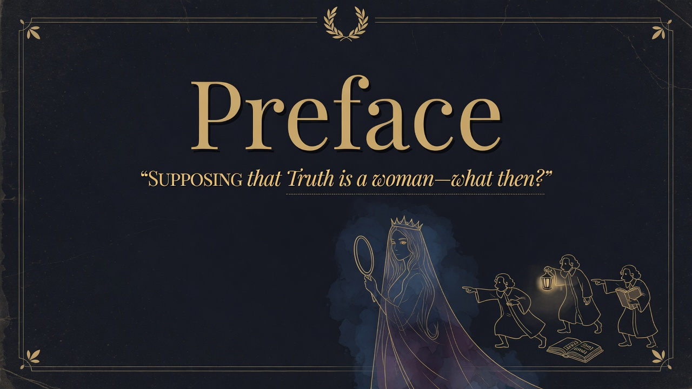

Religious style differs by culture: Latin peoples stay attached to Catholic vibes even when skeptical, while northern Europeans are generally weaker at religion. Piety is not a universal choice—it reflects deep cultural instincts. One-size-fits-all religion or secularism misses that.
Basically: nietzsche looks at how different peoples relate to religion. Latin cultures. especially the French.
Religious and cultural styles are not free-floating choices from a universal menu — they grow out of group history and instinct. Trying to impose one religious or secular model on everyone ignores real differences. The "good European" has to navigate those differences, not preach over them.
